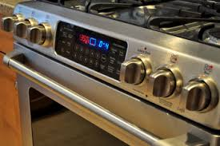
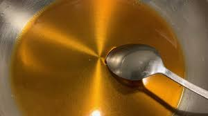
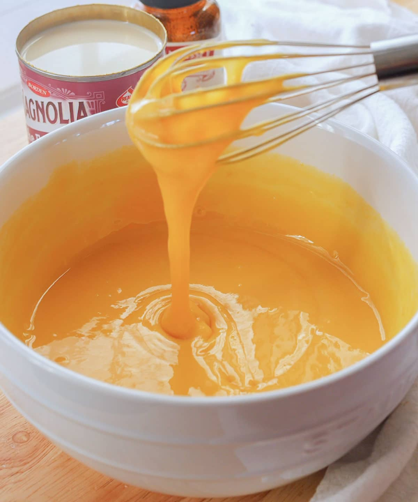
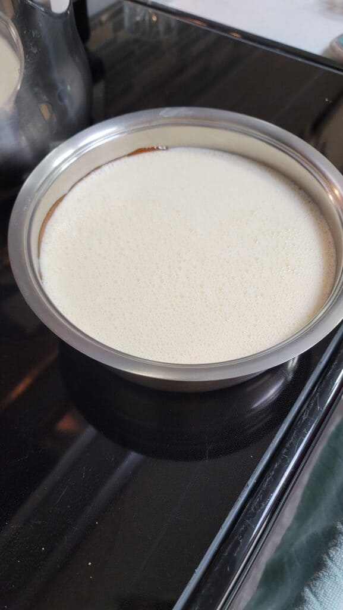
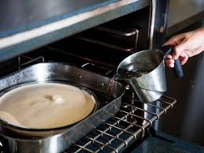
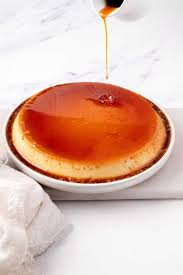

Flan Clásico
Ingredientes
- 1 taza de azúcar blanca
- 3 huevos grandes
- 1 lata (14 oz) de leche condensada azucarada
- 1 lata (12 oz) de leche evaporada
- 1 cucharada de extracto de vainilla
Utensilios Necesarios
- Molde redondo de vidrio de 9 pulgadas
- Cacerola mediana
- Tazón grande para mezclar
- Batidor o batidora eléctrica
- Bandeja para hornear honda
- Rejilla para enfriar
Instrucciones
-
Precaliente el horno a 350°F (175°C).
 -
Derrita el azúcar en una cacerola a fuego medio-bajo hasta que quede líquida y dorada. Vierte con cuidado el caramelo caliente en un molde de vidrio redondo de 9 pulgadas, gíralo para cubrir el fondo y reserva.
 -
Bate los huevos en un tazón grande. Incorpora la leche condensada, la leche evaporada y la vainilla; mezcla bien hasta que todo esté homogéneo. Vierte la mezcla sobre el caramelo en el molde.
 -
Colócalo en una bandeja para hornear honda y agrega agua caliente hasta cubrir 1 pulgada del molde.
 -
Hornea por 1 hora (revisa a los 55 minutos). Recuerda que el flan seguirá cuajando al enfriarse. Sácalo del horno y deja enfriar a temperatura ambiente.
 -
Para servir, desmolda: Pasa un cuchillo por los bordes, invierte el flan sobre un plato y déjalo caer suavemente. ¡No apresures!
